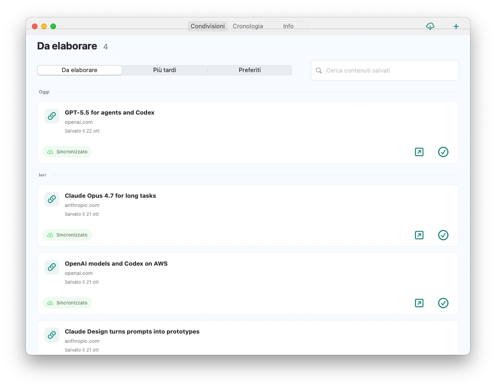
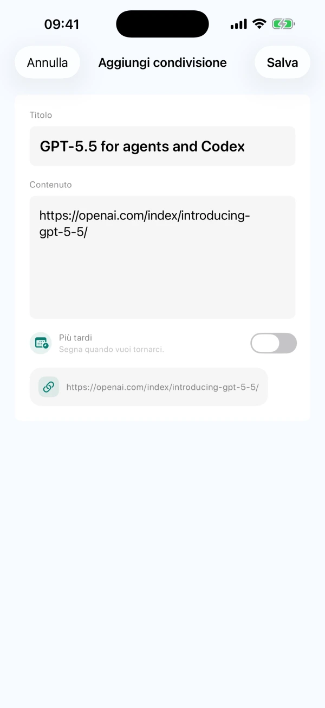
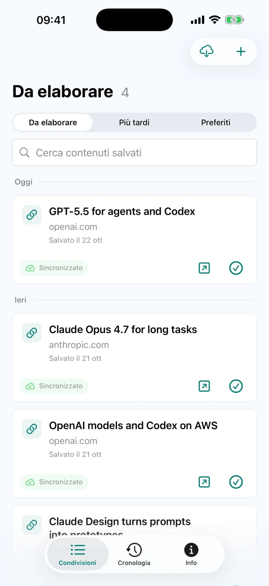

Condividi o scrivi a mano
Salva testi, link o immagini compatibili dal menu Condividi di altre app. Puoi anche scrivere un’idea direttamente in CarryOver.
Salva dal menu Condividi del telefono. Apri la fonte sul Mac quando sei pronto.
Scarica CarryOver per iPhone, iPad e Mac dall’App Store.


iPhoneiPadMac
Invia link, post e idee a CarryOver
Gli elementi aperti restano nella tua lista

Apri la fonte e segna l’elemento come completato
Salva testi, link o immagini compatibili dal menu Condividi di altre app. Puoi anche scrivere un’idea direttamente in CarryOver.
Gli elementi non completati restano nella lista, indipendentemente dalla loro età. Segnali come completati solo dopo averli gestiti.
Su iPhone, iPad e Mac, cerca per titolo, testo e URL di origine, sia nella lista aperta sia nella cronologia.
Gli elementi completati passano alla cronologia. Ripristinali nella lista aperta quando vuoi riprenderli.
Imposta data e ora e consenti le notifiche di sistema. Tocca il promemoria per aprire l’elemento salvato.
iCloud sincronizza iPhone, iPad e Mac con lo stesso Apple Account. La rete e lo stato di iCloud possono ritardare la sincronizzazione.
La versione attuale non ha limiti giornalieri di salvataggio e non richiede un aggiornamento Pro separato. Consulta l’App Store per disponibilità e prezzo nella tua regione. Leggi l’aiuto